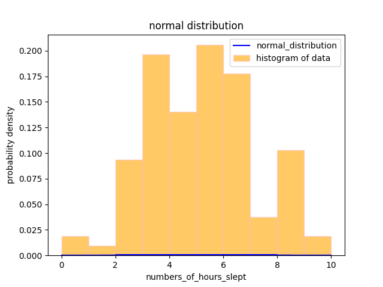

NORMAL DISTRIBUTION ANALYSIS OF STUDENTS DATA
1.Tools used for analysis: Python libraries Pandas and Matplotlib.
2.Data was collected using a Google Form from my college friends.
3.The collected data was saved in a CSV file and processed in Python
4.The following statistical measures were calculated using Python:
Mean: 4.752336448598131
variance:7.372531824495437e-31
The graph was plotted using Matplotlib
5.Y Axis=probability density
X Axis =number of hours students slept before MTT MATHS's test
conclusion:
This analysis demonstrates the use of data visualization and statistical calculations to understand trends.
The results can be applied to analyze performance and identify areas for improvement.
Using Python made the calculations and visualization efficient and straightforward.
